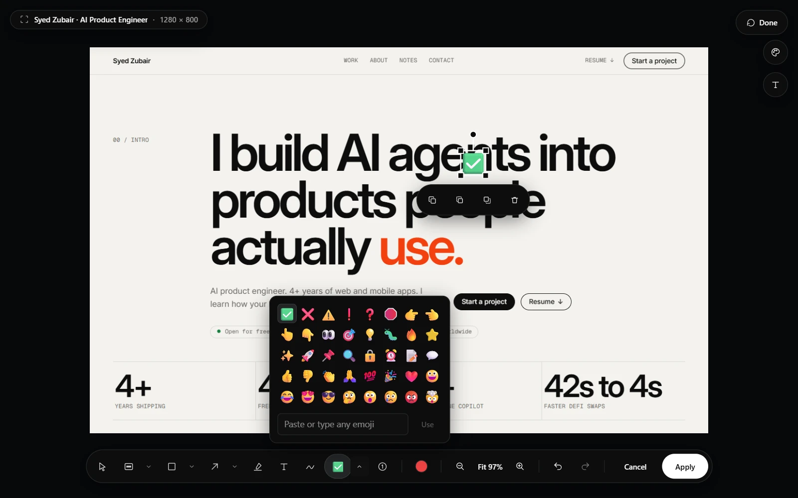
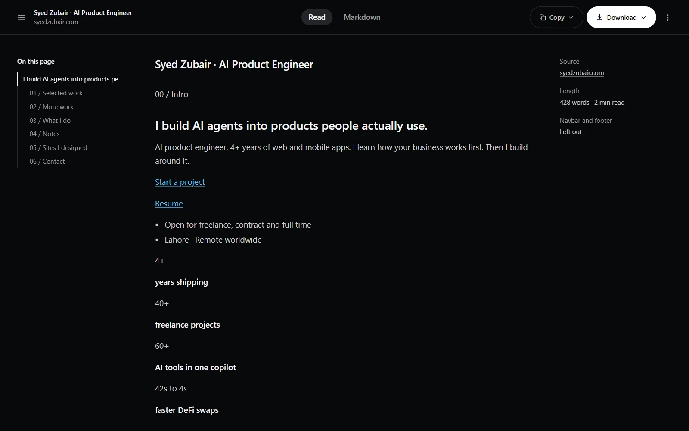

Draw before you capture
Choose an area and a toolbar stands beside it: pen, arrow, box, highlight, text, steps and emoji, with colour and options. Pick a mark up to move or delete it, then Capture, or Capture & edit to finish in the full editor. The toolbar never ends up in the shot.
Emoji
The editor has an Emoji tool: common ones in a panel, any other by pasting or typing it. Move, resize and turn it like any mark.

Markdown, on your device
Every capture now carries its page's text, plain or as Markdown, with a preview and .md and .txt downloads; each slice in a ZIP gets its own. The popup's Markdown button saves a whole page with no screenshot, or opens it as a document. An optional bar copies or saves any text you select as Markdown. Navbars and footers are left out unless you keep them.

Your coding agent can see the page
Claude Code, Codex, Cursor and other MCP clients can read pages as text or Markdown and take exactly the screenshots they need in your own Chrome. Send it a marked-up capture with a note, or answer when it asks you to choose an area. It can reload a tab to check a change, if you allow it. Off until you turn it on.
Fixed in this release
Markdown was checked against tutorial, reference, docs, wiki, README, issue, blog and news pages, and holds up on all of them.
- A region capture no longer includes a pinned navbar from elsewhere on the page.
- Text and Markdown read every element, including text still faded out until scrolled to.
- Code, tables and maths come through properly on documentation, wiki and blog pages.
Getting the update
- Chrome updates extensions on its own, usually within a day or two of a release.
- To check now, open chrome://extensions, turn on Developer mode, and choose Update.
- Look for version 1.3.0 on ScrollSnapshot's card.